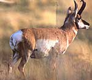
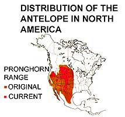
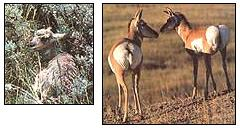
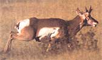
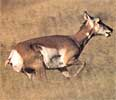
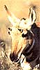

With "8-power"vision and 70 mph legs, the pronghorn is an American wonder.
The pronghorn's comeback is among the most dramatic in history.
Hanging from the walls or resting on the mantel in the front room of my cabin are the antlers and horns of a variety of wild North American ungulates. Some are attached pairs, others individual beams. None are from animals I have killed myself. A few I picked up from the forest floor during backcountry hikes, others I bartered from friends who bagged them in such unromantic locales as flea markets and garage sales. Their origins don't matter so much to me; they aren't trophies; it's simply their forms I fancy.
There are some unusual and attractive specimens in my little collection, including a beautifully formed 4x5-point rack from a relatively rare Tule elk.But the most interesting piece of ungulate headgear I own is also the least impressive at first glance. Leaned up against the wall at the back of the mantel, its modest form fairly hidden behind a dusty potpourri of flint projectile points, elk teeth and the skulls of various rodents and birds, rests a small black horn from a male pronghorn antelope.
The interesting thing about this horn, and pronghorn horn in general, is its uniqueness: It's not antler, nor is it horn as we commonly know it, but it claims some of the characteristics of both.
Although the terms antler and horn are frequently used interchangeably in casual conversation, each refers to a distinct type of ungulate headgear. Consider these four differences: While mature antler is solid, dead, bloodless bone, horn consists of an outer sheath composed of keratin (a hard epidermal tissue of the type that forms hooves, claws and fingernails in mammals) wrapped around a porous, living, blood-filled core. While antlers are deciduous (that is, they're cast off and regrown annually), horns are never shed, with the original-issue models remaining on the job for the life of their host. While mature antlers are always bifurcated, or branched, horns are almost always simple unforked shafts. While it's highly unusual for antlers to appear on females (except caribou), horns are commonly grown by both sexes.
And now we come to the unique horns of the pronghorn.
Unique pronghorn horn characteristic No. 1: The pronghorn is the only ungulate to grow headgear that's classified as horn but which is forked-sort of. A mature pronghorn buck will have horns a foot or more in length (up to a maximum of 20 inches or so), with the tips curled back (enabling rutsparring bucks to strike up into the vulnerable throats of their rivals) and each with a single flat prong, called the cutter, jutting forward from about midway up the shaft (and serving much like the hilt on a sword, to catch and stop the thrusting horn of a rival). Does of the species sometimes have much smaller horns.
Unique pronghorn horn characteristic No. 2: The pronghorn is the only ungulate to grow headgear that's classified as horn but which is deciduous-sort of. Each year, between late October and early December, pronghorn bucks shed the outer sheaths of their horns while retaining the slender inner cores, around which new sheaths have already begun to form. (In fact, the outward and upward pressure exerted by the growing sheaths helps to loosen the old sheaths.)
Unique pronghorn horh characteristic No. 3: hairy horns. On my desk before me now I have the pronghorn horn from my collection (a specimen I obtained, to my wife's disgust, by carving it from the crushed skull of a truckstruck buck alongside a remote Western byway several years ago). An inspection of the base of the horn reveals three distinct layers in cross section. The core, as with all horn, is porous bone marrow. Around this core is wrapped a layer of tough, white, cartilaginous tissue. The third, or outer layer looks a lot like thick hairs stuck together with black glue and hardened. Of course, as with most things in life, there's more to it than meets the eye.
The exterior of the horn I have here has a rough, barklike texture except at the tip, which the buck had polished smooth before his untimely demise. Under a magnifying glass, individual, unfused blond hairs can be seen protruding from the hardened black surface, more so near the base, making for, in appearance at least, a hirsute horn. What doesn't meet the eye is the fact that the bulk of the hairy-looking sheath is composed, not of fused hair, but of cornified, or hardened, tissue called epithelium.
The pronghorn is unique in more than its horns. Giving the lie to its scientific name,
Antilocapra americana -literally, "American antelope-goat"-the pronghorn in fact is no antelope at all, nor a goat (though it is commonly called a prairie goat by Westerners), but a unique, exclusively American animal (length of residency: 20 million years) with no close relatives of any sort anywhere on earth. Further, it's the sole genus in its scientific family, Antilocapridae, and the sole living species in its genus. (As opposed, say, to the deer family, Cervidae, which comprises deer, elk, caribou and moose in North America alone.)
An exceptionally large pronghorn buck might weigh as much as 140 pounds, but the average is closer to 110; does run about 10% lighter. The typical pronghorn stands to around 36 inches at the shoulders and is perhaps 52 inches in length. The backs and upper sides of adults are tan to russet, accented with thick dark manes, black facial markings (on bucks only) and white belly, rump and throat bands. The white rump is part of yet another unique attribute of the pronghorn.
In the third volume of his classic Lives of Game Animals , turn-of-the-century naturalist Ernest Thompson Seton details how he determined, through physical examination and dissection of dead zoo specimens as well as lengthy observation of the living, that the pronghorn uses its hoary posterior as a unique means of communication:
"[The white rump] seems at first like the rest of his spots-a mere patch of white coat; but it is found to be specialized for an important service. It is composed of hair graded from short in the centre, to long at the front edges. Under the skin of the part is a circular muscle by means of which the hair can, in a moment, be raised and spread radially into two great blooming twin chrysanthemums, more or less flattened at the centre. When this is done in the bright sunlight, they shine like tin pans, giving flashes of light that can be seen farther than the animal itself, affording a conspicuous identification mark that must be of great service to the species.
" Seton goes on to explain that the first pronghorn in a herd to spot potential danger will flash a warning, simultaneously releasing a musky scent. These dual alarms are quickly picked up by the rest of the animals, each of which duplicates the alerts so that, in an instant, the entire band is warned and on the lookout.
In pre-Columbian times, the pronghorn was one of the most plentiful, possibly the most plentiful, of the ungulates roaming North America, sharing the vast native grasslands of Western and mid-America with the bison and ranging as far east as the Mississippi River Valley. Seton once estimated that in primitive times North America may have hosted as many as 20 million pronghorns, but later discounted that figure, deciding that it was "a very low-a-far too low-estimate." An earlier researcher-publisher, naturalist, ethnologist arid Audubon Society founder Dr. George Bird Grinnell-speculated that pronghorns might even have outnumbered bison, which are thought to have been some 40 million strong around 1800. In 1908, the U.S. Biological Survey esti mated that no more than 20,000 pronghorns remained in all of Canada and the contiguous 48 states. But the low point was yet to come: By 1915, the total had dwindled to under 15,000. Miraculously, by the early 1920s, primarily because of a total ban on pronghorn hunting nationwide and the establishment of game preserves, the population had more than doubled to an estimated 30,326, including Canada and Mexico (Nelson, 1924).
Today, depending on where you live and travel, the pronghorn can be plentiful enough to be considered an agricultural pest and a hazard to nighttime motoring (near Casper, Wyoming, for example, it's common to see trophy-size bucks lying within yards of busy highways, insouciantly chewing cud while big diesel rigs scream by)-or can be an almost mythological creature whose name you may have heard in corny old cowboy songs but which you aren't likely to see outside a zoo. Pronghorn country is dry country, much of it desert.
Where surface water is available, pronghorns will troop in to drink deeply at least once a day. Where surface water is insufficient or nonexistent, the remarkable animals apparently can wring enough moisture to survive from cactus, which plants can account for more than 10% of their total diet, the rest consisting of grasses, forbs and browse. The pronghorn, as an old-line denizen of the treeless plains, prairies and deserts, has evolved to rely, not on the natural camouflage and stealth employed by deer and elk to keep themselves out of harm's way, but rather on its exceptional speed and vision. On September 17,1804, on the westbound leg of his long trek to the Pacific with William Clark, while traveling through what today is South Dakota, Captain Meriwether Lewis recorded in his journal the following observations (the creative spelling, punctuation and capitalization are his):
"I had this day an opportunity of witnessing the agility and the superior fleetness of [the antelope] .... I had pursued and twice surprised a small herd of seven . . . [and] got within about 200 paces of them when they smelt me and fled; I gained the top of the eminence on which they stood, as soon as possible from whence I had an extensive view of the country.. . the antelopes which had disappeared in a steep reveene now appeared at the distance of about three miles on the side of a ridge .... so soon had these antelopes gained the distance at which they had again appeared to my view I doubted at ferst that they were the same that I had just surprised, but my doubts soon vanished when I beheld the rapidity of their flight along the ridge before me . . . it appeared reather the rappid flight of birds than the motion of quadrupeds. I think I can safely venture the asscertion that the speed of this animal is equal if not superior to that of the finest blooded courser."
Well, yes, Cap'n, at the least: A prime buck pronghorn was clocked in the 1940s by a researcher-an unquestionably credible reporter who paced the animal in an automobile-at more than 61 miles per hour. That is, the car was doing 61 per when the pronghorn passed it. More recent clockings have exceeded even this, with one report claiming 70 miles per hour. Such speeds, of course, were attained in brief sprints; in the long run, a pronghorn can maintain more or less 40 miles per hour, mile after mile, hour after hour. The best racehorses can approach that speed but, lacking the pronghorn's stamina, will blow gut early on. In short, the pronghorn is the swiftest mammal native to North America, the swiftest mammal in the Northern Hemisphere and the second-swiftest mammal in the world, following close on the heels of the cheetah (which it will overtake and pass after the cat's limited endurance plays out).
The most colorful description I've seen of the pronghorn's visual acuity was reported in 1890 by Arthur W. DuBray and retold in Animals of the World (1917):
"`Liver-eating Johnson,' guide, scout, hunter and trapper, prairie-man, Indian fighter, thoroughly educated and equipped frontiersman at every point, graduate at the head of his class in prairie lore-withal, a long-headed, cool, and calculating man-once said to me while hunting: `What a live Antelope don't see between dawn and dark, isn't visible from his standpoint; and while you're a-gawkin' at him through that 'ere glass to make out whether he's a rock or a Goat, he's acountin' your cartridges and fixin's, and makin' up his mind which way he'll scoot when you disappear in the draw for to sneak up on 'im-and don't you ferget it.' "
Tolling, also called flagging, will sometimes lure in a wary buck.
In less colorful but more precise words, the pronghorn's big, black, long-lashed, protuberant eyes give it almost complete wraparound vision and a magnification long hailed as equal or superior to what you and I can see with the aid of 8X binoculars. (Although I'm not sure how this determination was arrived at.)
Given such amazing vision and speed, plus miles and miles of miles across which to see and flee, the pronghorn's security would seem almost invincible. But both Meriwether Lewis and Liver-Eating Johnson (who, incidentally, was the flesh-and-blood mountain man on whose life and considerable legend the Robert Redford movie Jeremi ah Johnson was based; the livers he purportedly ate were those of his slain enemies) knew that the pronghorn had one fatal flaw in its defenses: curiosity. Noting this, early white hunters borrowed from the Indians a technique for using the pronghorn's unbounded curiosity to lure it to within rifle range. Lewis called the trick "tolling," while the liver-eater knew it as "flagging.
" By either name, the caper required the hunter, after spotting the distant white specks that mean pronghorn on the prairie, to secrete himself in good cover, most often a ravine or a clump of sagebrush. He would then attach a brightly colored scarf to a long pole or the muzzle of his rifle and wave it furiously overhead-or simply lie on his back and kick his feet in the air. Spotting the movement from a great distance, the fatally curious animals would ease ever closer to the wondrous enticement. Whatever could this odd dancing thing be? When the animals were within range, the hunter took up his rifle and, if his aim was true, had meat for the camp pot. (Which meat, by the way, is-if the animal is killed cleanly and quickly cooled-tender and delicious, tasting to me like a cross between lamb and elk.) Savvy wildlife photographers today use the same trick to entice shy 'lopes into camera range.
It's just as well for pronghorns that they are such timid creatures, for there are those who would have them for dinner, and others who would exterminate them as pests.
Foremost among the pronghorn's natural enemies is deep snow, which slows and can even halt the small-hooved animal's escape from predators, buries his food and generally makes life miserable. Parasites and disease also take their toll. Important predators historically included mountain lions and bobcats, bears, wolves, coyotes and golden eagles (baldies prefer angling to hunting). Today, coyotes-which know to run a prong horn in relays until the sly dogs tucker out their far swifter prey-still take the odd animal, and the golden eagle remains a threat to newborn kids. Wolves, bears and mountain lions, however, have fairly been extirpated across the pronghorn's vast arid range, much of the "wild" in the once-Wild West disappearing with them.
The pronghorn's primary enemies these days are you and I. Although unrestrained hunting was a significant contributing factor to the pronghorn's near-demise around the turn of the century, modern, well managed hunting is rarely a threat to any species of big-game animal in America. In fact, it's in large part the money raised through the sale of hunting licenses and special taxes on hunting-related gear that have made possible the successful management programs that have brought pronghorn (and other large ungulate species) back from the brink in recent decades.
No, it's not our hunting, but our real estate development and agricultural endeavors-our houses and cities and highways and parking lots and shopping malls and livestock and fences and plowed fields and overgrazed rangelands and sheer, unrestrained numbers-that threaten the future of this wild creature and others.
So take advantage of the plentitude while you can. If you've not seen pronghorns bounding with birdlike grace across plain, prairie or desert, try to, soon. Your three best bets are Teton and Yellow-stone national parks, both in northwestern Wyoming, and the National Bison Range in western Montana. The animals on these refuges, their natural timidity buffered by long and proximate association with unarmed humans, often will allow you to approach to within Instamatic range-a real bonus for those observers lacking SLR cameras and telephoto lenses but wanting something more to take home than photos that require you to explain, "See, Fred, it's them little dots a'way out there.
"But go carefully when driving at night across those vast Western ranges-"where the bufalo roam and the deer and the antelope play"-else you might find your vehicle wearing a pair of those unique pronghorn horns as a hood ornament or, more disconcerting yet, wind up sharing the driver's seat with a prairie goat companion.
|
 Pronghorn kids have no spots but are a uniform dun color. At three weeks of age a kid will be able to outrun a coyote. When the while rump patch is flared, it signals danger (below right). And now we come to the unique horns of the pronghorn. |
 America's fastest animal, doing is stuff. The pronghorn's antlers are unique. |
 |
|
 |
 |
 |